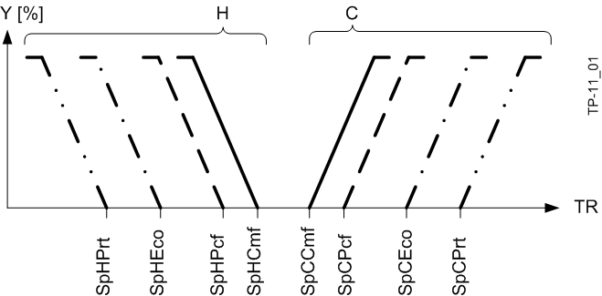
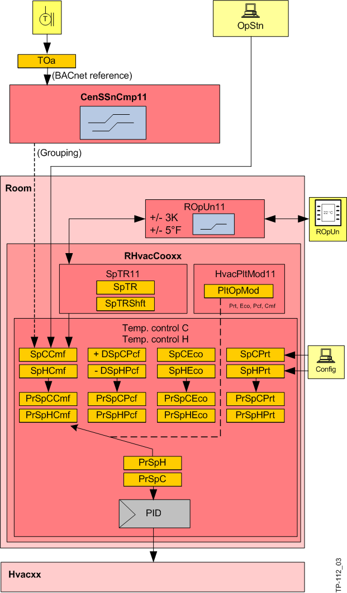

设定值生成
Setpoints
每个房间都有 8 个不同的室温设定点：舒适、预舒适、经济和保护操作模式各有一个供暖和制冷设定点。

Key
TR | 室温 |
Y | 控制输出 |
H | 加热 |
C | 冷却 |
房间操作模式使用如下：
房间运行模式 | 描述 |
|---|---|
舒适度（CMF） | 操作模式包括状态的相应设定值：建筑物使用中、房间占用。 |
预舒适 (PCF) | 无人房间的操作模式。室温可在短时间内达到舒适设定值。 |
经济（生态） | 长时间无人居住的房间的运行模式，例如晚上或更长时间缺席。显着降低加热/cooling 能耗。 |
保护（建筑物）（Prt） | 如果建筑物、翼楼甚至单个房间在较长一段时间内（周末或假期）不使用，则加热设定点会降低或冷却设定点会增加，以仅使用很少的加热或冷却能量来保护建筑物及其内容物。 |
Overview

以下来源会更改舒适度的供暖和制冷设定点：
- The central seasonal compensation (CenSsnCmp11) adjusts the setpoints SpHCmf and SpCCmf based on the characteristic curve dependent on the outside temperature.
- Setpoints can be edited directly from the management station.
预舒适设定值是在温度控制 AF 中根据舒适设定值和差异设定值（供暖或制冷的差异设定值 DSpHPcf/DSpCPcf，默认 1 K 或 2.0 °F，BACnet 配置值）计算得出的。它们可以通过 BACnet 客户端进行编辑。
舒适度和预舒适度的设定点可以在房间操作员单元或设定点调节器上进行本地调整（默认 +/- 3 K 或 +/-5.4 °F，在设计房间操作员单元时可以更改范围）。
经济和保护的设定点在工程期间作为温度控制的一部分进行配置（BACnet 配置值）。它们可以通过 BACnet 客户端进行编辑。
所有产生的当前设定点都作为 BACnet 对象提供给温度控制 AF。
设定值 | 计算/Configuration | 结果：当前设定值 |
|---|---|---|
舒适供暖设定值 | SpHCmf + SpShft | PrSpHCmf |
预舒适加热设定值 | SpHCmf – DSpHPcf +SpShft | PrSpHPcf |
经济供暖设定值 | 15 [°C] / 55 [°F] | PrSpHEco |
加热设定值保护 | 12 [°C] / 53.6 [°F] | PrSpHPrt |
舒适的冷却设定值 | SpCCmf + SpShft | PrSpCCmf |
预舒适的冷却设定值 | SpCCmf + DSpCPcf +SpShft | PrSpCPcf |
经济型冷却设定值 | 35 [°C] / 85 [°F] | PrSpCEco |
设定点冷却保护 | 40 [°C] / 104 [°F] | PrSpCPrt |
温度控制（xxTRCtlC11、xxTRCtlH11、xxTCasCtlC11、xxTCasCtlH11）根据工厂运行模式（来自 HvacPltMod11）从设定点中为加热和冷却（PrSpH 和 PrSpC）各选择一个设定点，并使用它们来控制设备。